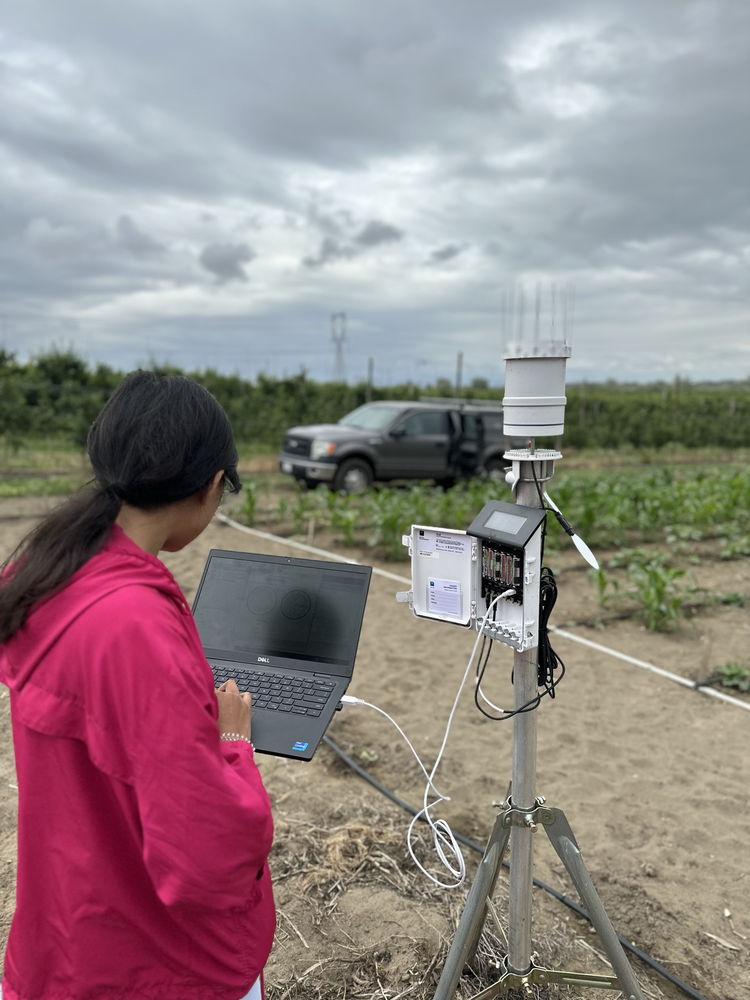
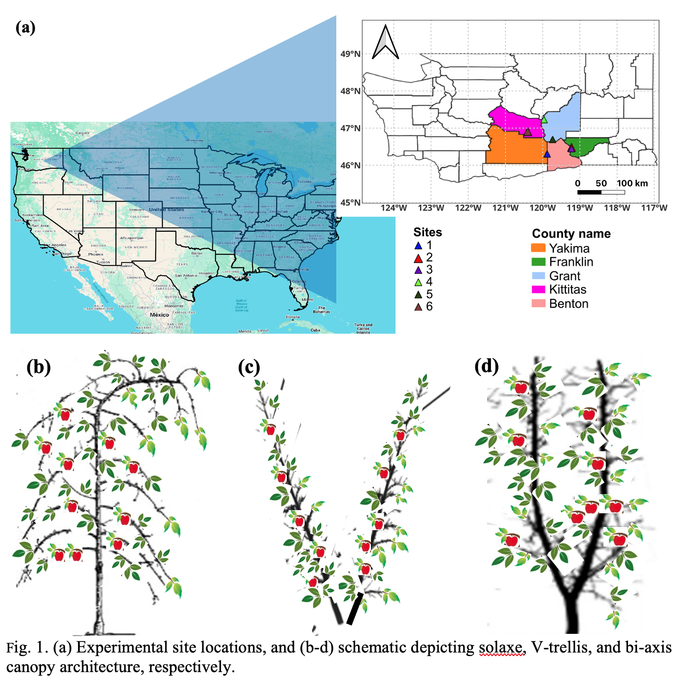
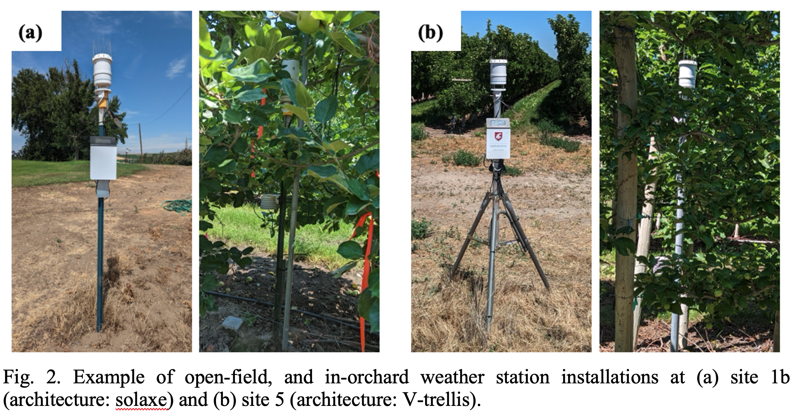

Weather-based decision-support tools for in-orchard management are derived from open-field weather station data with an assumption that there is minimal to no difference between open-field and in-orchard weather. Orchard training system, growth stage, and various management practices can cause different weather conditions inside the orchard, that may lead to bias and uncertainty in the weather-based models. This study quantified orchard training and management effects (e.g., irrigation and overhead cooling for ameliorating heat stress to maturing fruits and canopy) on air temperature, relative humidity, solar radiation, and wind speeds at different time scales using two seasons data from six commercial apple orchards. A paired t-test revealed significant differences (p < 0.05) between the seasonal means of the open-field and in-orchard weather, indicating substantial orchard effects. Typically, orchards have 1.9 to 4.4 ℃ daily maximum cooler air temperature and 9.2 to 27.5 % higher relative humidity due to the evident impacts of canopy transpiration. Also, in-orchard stations recorded lower solar radiation (267.8 to 483.2 W m-2) and wind speed (2.2 to 3.7 m s-1). Monthly averages revealed the dependence of orchard effects on the phenological stages of apple canopies. Wind resistance and reduced air mixing caused drier microclimate during winter (RH offset: 8.7 %) and spring (RH offset: 7.7 %) season. Use of overhead sprinklers for heat stress mitigation reduced air temperature (5.2 ℃) and increased relative humidity (up to 31 %) inside the orchard, and the effects lingered during evening and night hours.